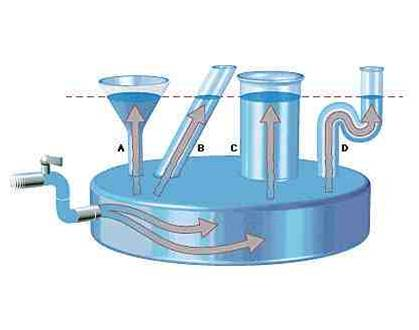

https://sonaryr.github.io/duiktheorie GIT repository
Open Source
GSM's uit of stil
Vragen? Stel ze!
Een druk, uitgeoefend op een deel van een vloeistof, plant zich in alle richtingen voort met dezelfde grootte.
Bij constante temperatuur is het volume van een bepaalde hoeveelheid gas omgekeerd evenredig met de druk
$p \cdot V = Cte$
$p \cdot V = Cte \Rightarrow 3bar \cdot 1l = 1bar \cdot ?l$
⇒ de ballon zal 3l lucht bevatten.
Een lichaam ondergedompeld in een vloeistof, ondergaat een opwaartse stuwkracht gelijk aan het gewicht van de verplaatste vloeistof.
We vervangen de blok lood door een kubus van 1m³ en we brengen die naar een diepte van 10m in (zoet) water
Gelijke volumes van verschillende stoffen hebben een verschillend gewicht en dus ook een verschillende massa.
Voor duikers zijn de belangrijkste:
Bij onvervormbare lichamen
Een ondergedompeld lichaam behoudt zijn gewicht
⇒ 2 tegengestelde krachten
Drijven
opwaartse stuwkracht ondergedompeld deel = gewicht
Tijdens een duik op een groot zoetwater meer heb je van de schipper de opdracht gekregen om het anker van de daallijn terug naar boven te schieten door middel van een hefballon. Het is een klein anker van 20kg met een volume van 2dm3, en de duikplaats ligt op 30m diepte.
Voor deze oefening gaan we er van uit dat de hefballon en lucht geen massa hebben.
Wat is de minimum inhoud van de hefballon?
Hoeveel bar lucht zal er van 10l fles nodig zijn?
Vanaf welke diepte zal een ballon van 30l 'overlopen'?